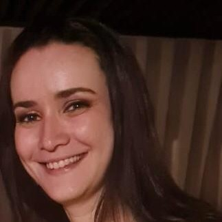

Instituto Luria de Neuropsicologia
Cuidando da saúde mental e neurológica com excelência e humanização. Nossa missão é proporcionar atendimento especializado, diagnóstico preciso e tratamento eficaz.
Agende uma ConsultaSobre Nós
Conheça o Instituto Luria
O Instituto Luria de Neuropsicologia e Promoção a Saúde foi inaugurado em 2010 e, desde então, tem como objetivo promover um espaço para atendimento clínico multiprofissional assim como divulgar a psicologia histórico-cultural e a teoria da atividade a partir de cursos, grupos de estudo, programas de prática-supervisionada e estágio.
O Instituto Luria é dirigido pelos psicólogos e mestres em diagnóstico e intervenção neuropsicológica: Caio Morais e Camila Borges.
No Instituto Luria, acreditamos que cada pessoa é única e merece um atendimento personalizado que considere suas necessidades específicas, histórico e contexto de vida.
Nossos Serviços
Avaliação completa das funções cognitivas através de testes padronizados, entrevistas e observação clínica, resultando em um relatório detalhado com diagnóstico e recomendações.
Reabilitação de funções cognitivas, como memória, atenção, linguagem e funções executivas. O foco é promover a recuperação ou compensação das funções afetadas, melhorando a qualidade de vida do paciente.
Atendimento psicológico individual para questões emocionais, comportamentais e adaptativas, com abordagens específicas para diferentes transtornos e condições.
Identificação de dificuldades de aprendizagem e desenvolvimento de estratégias personalizadas para superá-las, em colaboração com escolas e educadores.
Supervisão para profissionais da psicologia que desejam aprimorar sua prática clínica à luz da abordagem histórico-cultural e teoria da atividade. Sessões com dicussão, acompanhamento e orientação de casos clínicos, itegrando teoria e prática.
Curso com Supervisão para profissionáis de piscologia que queiram aprofundar ou inicar a pratica clínica em neuropsicologia, com acesso a instrumentos, teste e orientações para avaliação neuropsicológica.
Nossa Equipe
Caio Morais
Neuropsicólogo
Mestre em Diagnóstico e Reabilitação Neuropsicológica pela Universidade Autônoma de Puabla, México. Atua em avaliação e intervenção neuropsicológica e em psicoterapia com crianças, adolescentes e adultos. Ministra aulas em cursos de pós graduação e cursos livres. Realiza supervisão de profissionáis da área de Neuropsicologia. Sócio do instituto Luria de Neuropsicologia.

Camila Borges
Neuropsicóloga
Mestre em Diagnóstico e Reabilitação Neuropsicológica pela Universidade Autônoma de Puabla, México. Atua em avaliação e intervenção neuropsicológica e em psicoterapia com crianças, adolescentes e adultos. Ministra aulas em cursos livres. Realiza supervisão de profissionáis da área de neuropsicologia. Sócia do instituto Luria de Neuropsicologia.

Perla Villaverde
Psicóloga
Psicóloga e especialista em Neuropsicologia pela UFBA, com 14 anos de atuação na equipe da rede Sarah de Hospitais de Reabilitação. Atua na investigação diagnóstica, reabilitação, treino familiar e psicoeducação de adultos e idosos, e com formação e supervisão de profissionáis da área. Possui expertise em pacientes com doenças neurodegenerativas, lesão adquirida e neurodiversidade em adultos.
Viviane Abbehusen Soledade
Psicopedagoga
Psicopedagoga, Pedagoga, Especialista em Neuropsicologia. Atua na avaliação e intervenção psicopedagógica, rastreio da Síndrome de Irlen e adaptação curricular de matarial escolar.
Clarice Batusanschi
Pedagoga
Pedagoga pela Universidade de São paulo e Psicopedagoga pelo Instituto Singularidades, tem mais de 15 anos de experiência na educação. Foi professora, atelierista, coordenadora de oficinas culturais e atua como terapeuta da aprendizagem, condizindo aprendentes a superarem desafios cognitivos com autonomia e protagonismo.
Mislene Borges
Psicóloga
Psicóloga, mestranda em psicologia e intervenções em saúde pela Bahiana, pós-graduação em ABA pela IEPSIS e em terapia Analítica Comportamental pela UNIJORGE. Capacitada para utilização da Escala Labirinto de Diagnóstico de Autismo, segurança em crises agressivas e treino de habilidades sociáis. Atua com avaliação e intervenção de crianças, adolescentes e adultos em desenvolvimento atípico.
Ana Carolyne Goiabeira
Psicóloga
Psicóloga infanto-juvenil, especialista em Saúde Mantal e neuropsicologia, com formação em psicopatologia infantil. Cursou mestrado em Psicologia e Intervenções em Saúde. Possui experiência em atendimento e avaliação psicológica e neuro psicológica de crianças e adolescentes, com o percurso de atuação em ambientes clínico, escolar, SUS e na Assistência Social.
Entre em Contato
Informações de Contato
Endereço
Rua Dr. José Peroba, 325, Edficio Elite Comercial - sala 1206 e 1207
Costa Azul, Salvador, Bahia.
Telefone

Horário de Funcionamento
Segunda a Sexta: 8h às 18h
Sábado: 8h às 12h